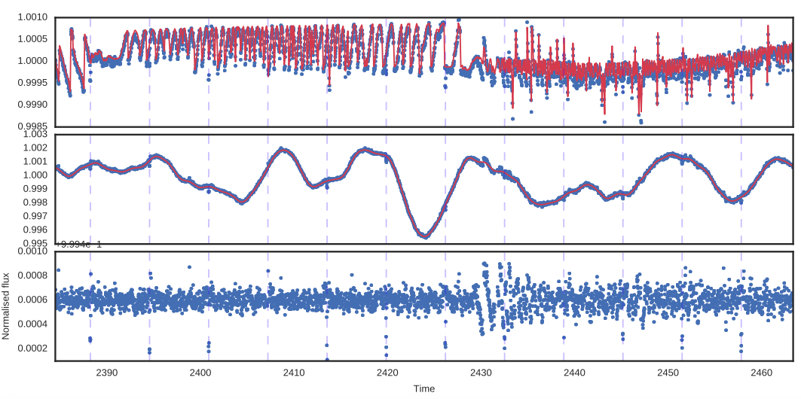
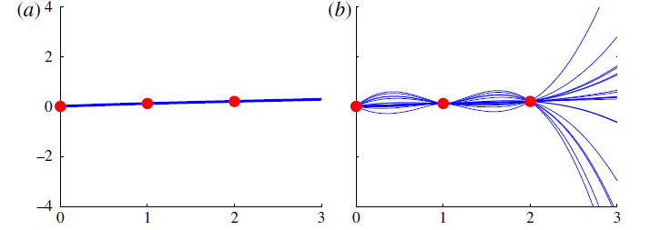

How to Find an Exoplanet
(with Gaussian Processes)
Benjamin Pope
benjaminpope.github.io/talks/capstone/capstone.html
Transiting Planets
Exoplanet-style transit light curve of Venus from James Gilbert on Vimeo.
Kepler Photometry
but the pixels have different gains ("inter- and intra-pixel sensitivity variation")...
and the pixel window doesn't necessarily track the whole PSF perfectly ("aperture losses").
By subtracting the GP time and spatial components, we can find a transiting planet!
Also see Dan Foreman-Mackey's tutorial, An Astronomer's Introduction to Gaussian Processes (tinyurl.com/swbgsmd)
Or David Mackay's free book Information Theory, Inference, and Learning Algorithms (tinyurl.com/yxeyve76)
Or the great book, Rasmussen & Williams (gaussianprocess.org).
GPs provide a pdf over functions
You can use these to fit to variations in time series, spectroscopic, spatial data... whatever you want
but they can blow up unrealistically.

This information is contained in the covariance matrix
\[K = \begin{bmatrix} \sigma_1 & \kappa\\ \kappa&\sigma_2 \end{bmatrix}\]
How do we generalize this to higher dimensions?
\[p(\mathbf{y}(\mathbf{x})) \sim \mathscr{N}(\mathbf{\mu}(\mathbf{x}),K(\mathbf{x},\mathbf{x}))\]
with covariance
\[K(\mathbf{x},\mathbf{x}) = \begin{bmatrix} k(x_1,x_1) & k(x_1,x_2) & ... & k(x_1,x_n) \\ k(x_2,x_1) & k(x_2,x_2) & ... & k(x_2,x_n) \\ \vdots &\vdots &\vdots &\vdots \\ k(x_n,x_1) & k(x_n,x_2) & ... & k(x_n,x_n) \end{bmatrix}\]
\[k(x_i,x_j) = h^2 \exp({-(\frac{x_i - x_j}{\lambda})^2})\]

\[k(x_i,x_j) = h^2 \exp(-\Gamma {\sin^2}[\frac{\Pi}{P} |x_i - x_j|]) \]

- Write down a kernel
- Optimize hyperparameters with respect to data
- Calculate the posterior mean
(except in special cases)
Applying a GP to real data
tinyurl.com/t5j2ncs